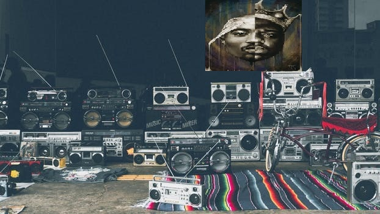

Overview
Since Hip hop has existed, producers and beatmakers have played a vital part for artist. In the era of Notorious B.I.G. and Tupac Sakur, the producers and beatmakers behind their music were not reconized for their work. In that time, if you were not DrDre, then you were not known as a producer.
In todays hip hop this is the complete oppisite. We know see music producers getting the reconizition they needed, and treated as celeberities. This is thanks to the emergance of Hip Hop artist like Gucci Mane, Rick Ross, Lil Wayne, and Future. These artist made so many great tracks that they had listerns and artsits alike, questioning theirselves "who made this beat?"
Super Producer Metro Boomin was one of the first to show off the impact he had on Hip hop artist today. His imapact on these artist created a high deamnd for the production of music.
In todays society we see more hip hop artist emerging out of the blue. This would not happen if it was not for the emergance of music producers and beatmakers.
Old school hip hop electronics and a cropped picture of Biggie Smallz and Tupac Shakur
Top Music Producers
| Tupac Sakur/ Bigge Era | DrDre | Bone Thugs | Hi-Tek |
|---|---|---|---|
| Today Producers | Metro Boomin | Pierre Bourne | Kanye West |